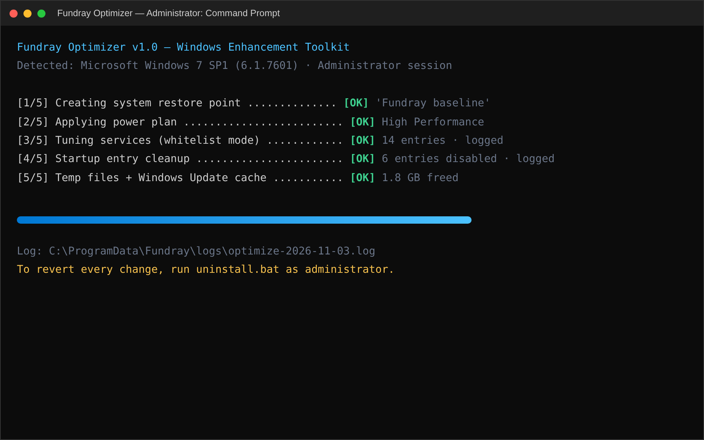
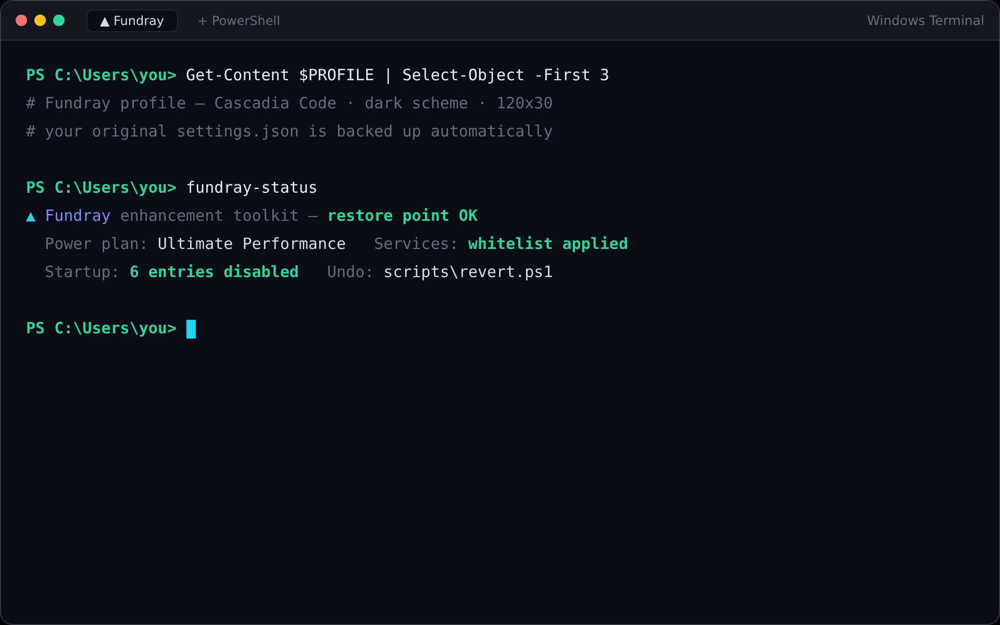
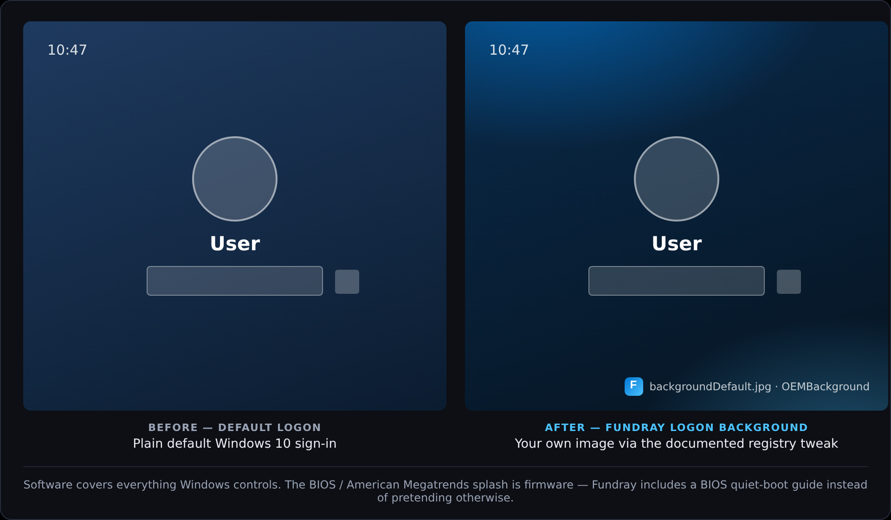
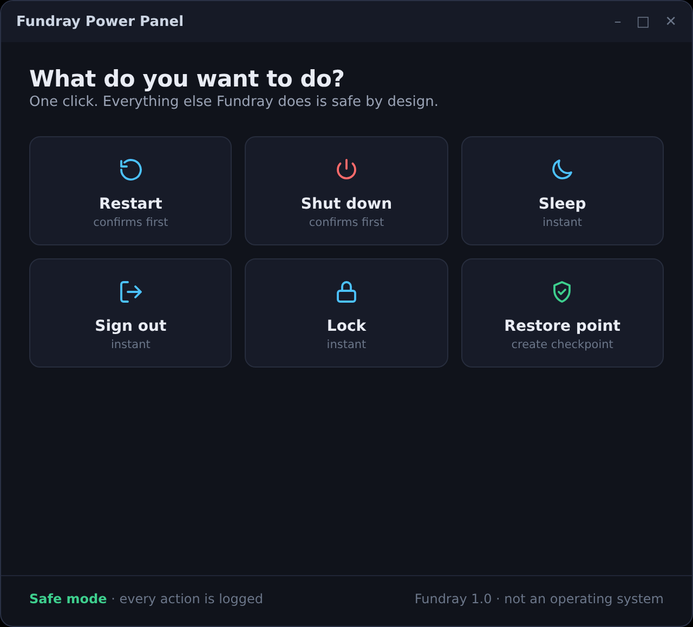
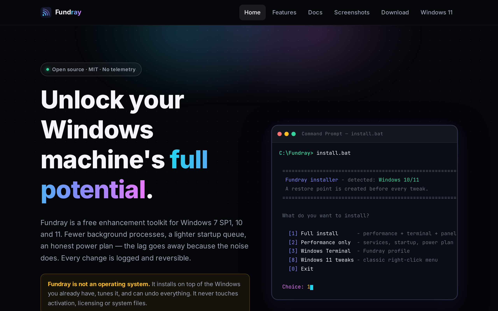
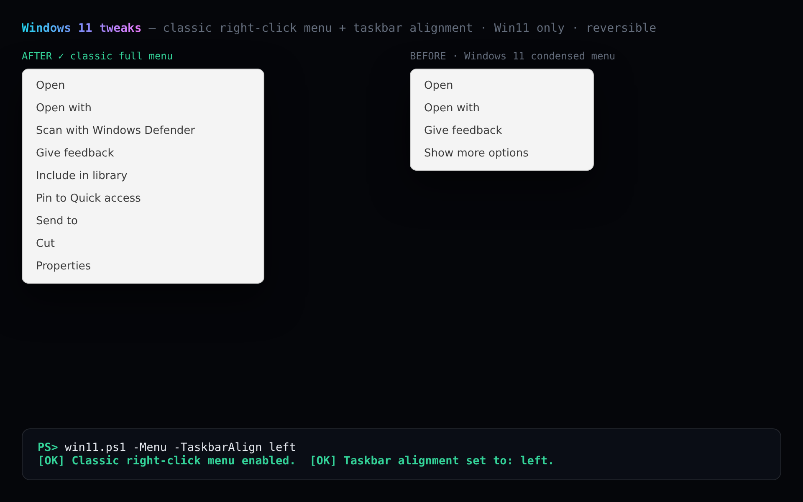

Everything Fundray does
Seven focused modules, each one a plain-text script you can read before you run it. Screenshots show the real interfaces shipped with the toolkit.
Performance optimization
One command walks through the five steps that actually matter on an aging machine — each one announced, logged, and undoable from the same menu.
- High Performance (Win 7) or Ultimate Performance (Win 10/11) power plan
- Whitelist-only service tuning — critical services are never touched
- Startup-entry cleanup with a full before/after list saved to disk
- Temp files and Windows Update cache cleanup
- Optional visual-effects tune (disable animations, keep font smoothing)

Windows Terminal, your way
Fundray adds a dedicated Fundray profile to your existing Windows Terminal settings.json. Nothing of yours is overwritten, and a one-click restore puts the original file back byte-for-byte.
- Cascadia Code font, dark scheme, 120×30 default window
- Stored as a separate profile — your profiles stay untouched
- Automatic backup of settings.json before any change
- Works when Terminal is installed; skipped silently when it is not

Boot & splash, honestly
Set your own logon background through the documented OEMBackground registry method, and get straight answers about the boot screens Fundray cannot touch — including the American Megatrends splash, which lives in your motherboard firmware.
- Logon background via OEMBackground + backgroundDefault.jpg (Win 7 & 10)
- Full undo — removes the image and the registry key it created
- BIOS quiet-boot guide for hiding the AMI / POST splash the legitimate way
- No bootres.dll patching, ever — Fundray will not risk your boot

The shutdown GUI you asked for
Power Panel is a small dark window with six big buttons: Restart, Shut down, Sleep, Sign out, Lock and Restore point. Pin it, hotkey it, done. Built with WinForms so it runs on Windows 7 SP1, 10 and 11 alike.
- One-click restart, shutdown, sleep, sign out and lock
- Create a restore point from the same window
- Keyboard-friendly and safe — a confirm step on Restart and Shut down
- Start-menu shortcut created by the installer

Windows Defender, opt-in control
Some users want Defender real-time protection paused during heavy work or after they install their own antivirus. Fundray exposes that as a separate opt-in switch — never part of the one-click optimizer — with warnings and a full undo.
- Disable / enable real-time protection from one menu item
- Uses documented Group Policy keys plus Set-MpPreference where available
- Warns clearly: a paused Defender is a real security trade-off
- Re-enabled automatically by uninstall.bat
Appearance, safely
A calmer, cleaner desktop: visual-effects tuning, a curated theme guide, and the logon background from Module 03. Fundray itself never patches or replaces system files.
- Visual-effects profile: animations off, font smoothing on
- Theme pointers and a Windhawk / SecureUxTheme guide — external and optional
- Icon-pack recommendations without touching system DLLs
- Everything recorded in the undo log

Windows 11 tweaks
The two registry settings every Windows 11 user asks about — applied by a script that refuses to run anywhere except Windows 11, and logs everything to the same undo file as the rest of the toolkit.
- Classic full right-click menu — back by popular demand
- Taskbar alignment:
-TaskbarAlign leftorcenter - Self-checks the OS version before touching anything
- Reversible with revert.ps1 like every other module

Seven modules, one menu
Pick them one at a time or take the full install — the restore point comes first either way.